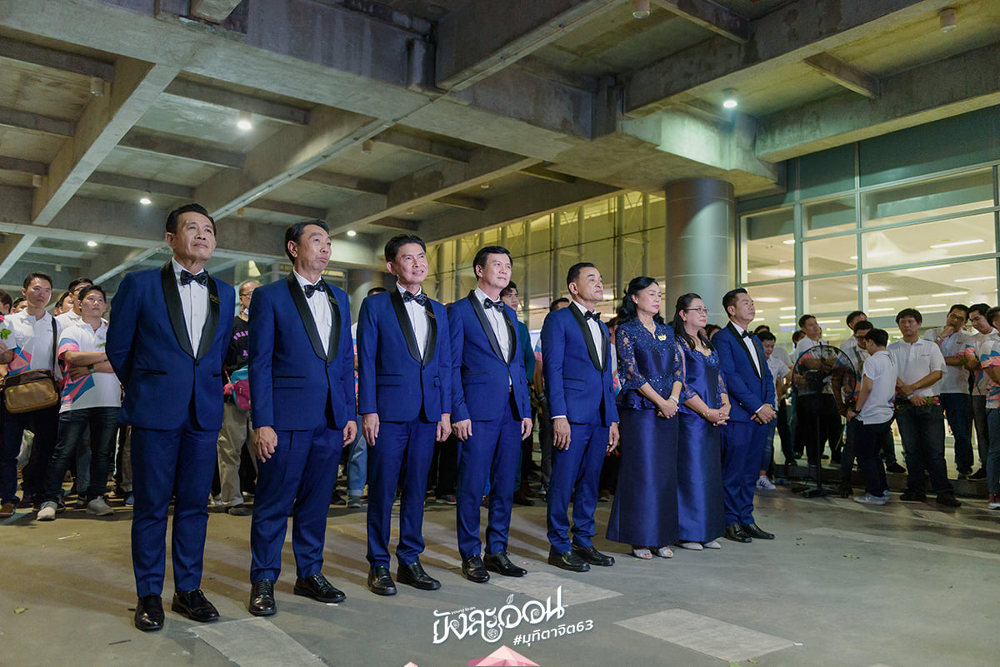

Hightlight ภาพบรรยากาศความประทับใจในงาน มุทิตาจิต 63 "ยังละอ่อน"
ทุกการสิ้นสุดคือการเริ่มใหม่
โดย ฐาปน กนกคุณธรรม 305/6 และ คิดคม ธีรอัครวิภาส 305/20
Hightlight ภาพบรรยากาศความประทับใจในงาน มุทิตาจิต 63 "ยังละอ่อน"
“มุทิตา” หมายถึงความเป็นผู้มีใจชื่นชมยินดีในเมื่อผู้อื่นได้ดีหรือได้รับความสำเร็จอย่างใดอย่างหนึ่ง เป็นอาการที่เกิดขึ้นในใจเองโดยมิได้บังคับ เกิดขึ้นเพราะจิตใจปราศจากความอิจฉาริษยา เกิดขึ้นเพราะเป็นผู้มีปกติยอมรับในผลสำเร็จหรือความดีของคนอื่น เพราะฉะนั้นจึงเรียกเป็นคำเต็มได้ว่า “มุทิตาจิต” คุณธรรมข้อนี้มิใช่ว่าจะเกิดขึ้นง่าย ๆ หรือเกิดขึ้นแก่ทุกคนไม่ เพราะปกติธรรมดาคนทั่วไปมักจะไม่ค่อยยอมรับในความดีของผู้อื่น มักจะไม่ค่อยชื่นชอบนักหากผู้อื่นได้ดีเกินหน้า โดยเฉพาะในคนที่ไม่ชอบหน้ากันอยู่แล้ว มุทิตาจิตจะเกิดขึ้นไม่ได้เลย ดังนั้นคนที่ทำให้จิตเกิดมุทิตาได้จึงเป็นบุคคลพิเศษที่ยกระดับจิตใจให้สูงกว่าคนธรรมดาสามัญได้แล้ว เป็นคนเปิดใจกว้าง ยอมรับความดีของผู้อื่นและพร้อมเสมอที่จะแสดงความชื่นชมยินดีด้วยเมื่อผู้อื่นได้ดี ผู้ทำได้ดังนี้ท่านว่าเป็นผู้ยกระดับจิตใจถึงขั้นระดับเป็นพระพรหมทีเดียว เพราะมุทิตาจิตนั้นเป็น “พรหมธรรม” หรือ “พรหมวิหารธรรม” ข้อหนึ่ง ซึ่งเป็นธรรมของผู้เป็นพรหมของผู้ใหญ่ผู้ประเสริฐแล้ว จึงกล่าวได้ว่ามุทิตานี้เกิดได้ยากนักยากหนา ที่เกิดได้ง่าย ๆ นั้นเพราะเขาฝึกไว้ดีแล้วต่างหาก
การแสดงออกซึ่งมุทิตาจิตนั้นมิใช่หมายเพียงการนำสักการะไปถวาย การนำกระเช้าดอกไม้ไปให้ การเลี้ยงกันหรือการกล่าวอวยพรกันเท่านั้น เพราะการแสดงเช่นนั้นเป็นเพยงจุดหมายที่ให้รู้ว่ามีมุทิตา แท้ที่จริงมุทิตานั้นจะต้องเริ่มต้นเกิดที่จิตใจก่อน เมื่อจิตใจเกิดมุทิตาแล้วก็เป็นอันใช้ได้ส่วนจะแสดงต่อด้วยการกระทำหรือด้วยคำพูดเช่นนั้นก็เป็นอีกเรื่องหนึ่ง แม้หากว่าจะแสดงกันอย่างนั้น แต่ก็ทำไปด้วยความจำเป็นตามมารยาทสังคมแบบเสียไม่ได้ หรือถูกบังคับให้ทำโดยที่โจทย์มิได้ยินดีด้วยเลย การแสดงออกเช่นนั้นก็หาจัดว่าเป็นการแสดงมุทิตาจิตไม่ เพราะใจไม่ได้เกิดมุทิตาด้วยเลย อีกประการหนึ่งเล่า จิตใจที่จะเปี่ยมด้วยมุทิตานั้นจะต้องกำจัดอารมณ์ในใจอันหนึ่งคือ “อรติ” ให้ได้เด็ดขาดด้วย อรตินั้นคือความไม่พอใจเพราะเกิดความอิจฉาริษยา เกิดความไม่ยินดี อรตินี้เป็นศัตรูต่อมุทิตาโดยตรงจึงต้องกำจัดให้ได้เด็ดขาด จึงจะเป็นมุทิตาจิตที่บริสุทธิ์ ดังนั้นจึงกล่าวว่า มุทิตาจิตเป็นจิตระดับสูงถึงขั้นเป็นจิตของพระพรหมดังกล่าวข้างต้น แท้จริง อรติ ความไม่พอใจ ความอิจฉาริษยานี้มันเป็นกิเลสบังคับใจบังปัญญาและบังความรู้สึกผิดชอบชั่วดี บังความควรไม่ควรไว้หมด ทำให้คนมองไม่เห็นความดีของใคร ทำให้ชมใครไม่เป็นสรรเสริญใครไม่ได้ ทำให้คนมองกันในแง่ดีไม่ได้ ซ้ำยังกระตุ้นให้คนคิดทำลายลางความดีของผู้อื่นอยู่ตลอดเวลา เห็นใครดีเกินหน้าไม่ได้จะต้องคิดทำลายล้าง ลบหลู่ความดีของผู้อื่นให้หมดเสียร่ำไป